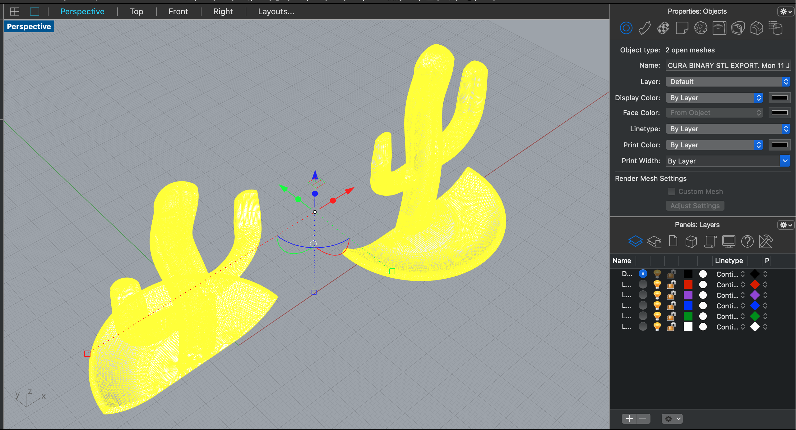

Assignment 6: Molding and Casting
By Sherry Wang
This assignment was rocky for me, so for the documentation, I'm splitting it into two parts: the Minimum Viable Product being casted and delivered, and the original ideation in CAD.
MVP:
As usual, here's the group pic of the final deliverables - 4 identical parts in plaster, 1 mold in silicone, and 1 mold for mold 3d printed:

The design in CAD was very easy. I made a cube, surrounded it with a box, and then added four keys in the corners. There were a few things I kept in mind. First, the box should be higher than the cube, so that the silicone being poured can close up on top. Second, the spherical keys should have a little bit of tolerance in the ease of joining: I applied a difference of 0.5mm. Third, the pour + vent hole shouldn't be too narrow, or else it would be difficult to pour the plaster in.
After the design for this mold for mold was done, I exported it into an stl file and a gcode file and started printing. It took 4 hours and 16 minutes to print, and the outcome is here:

Next, I mixed the oommoo together using the volume ratio of 1:1 and poured it into the mold for mold. I let it sit overnight, so it was well past the 6-hour curing timeframe. I used a knife to carefully lever the mold out.


Once the mold was done, I used tapes to bind the two parts together to prevent the plaster from leaking. Tapes could not stick on silicone, so I had to apply tapes over tapes. I tried using rubber bands as well, but they were so stretchy that the mold got crushed a bit.
Finally, I mixed the hydrostone with water and poured the mixture in through the hole. The first two cubes were very fast to cast - I opened the mold after about six hours each and they were already done. There were some air bubbles, but I figured if I shake the mold better in the future, it should solve the problem.

The third cube was interesting. As I mixed the hydrostone, it got hotter and stickier very soon, possibly reacting with water. Nevertheless, I poured it in and got this:

That's unsatisfying and a little disgusting. So I threw it away and started again. It went without more incident, but taking much longer to cast than the first two, at least 24 hours. Eventually, all were done.
Original Ideation:
As you can tell, those cubes were not so impressive. That's because they were a backup plan. My original idea was to design a cactus ring holder. During the first week of this assignment, I failed to vertically cut the master part in half and product two closed parts. The meshes remain open no matter what:

I tried so hard but still failed to make these halves back to closed meshes. I also tried to use other cactus thing files but encountered similar issues. As I began to feel desparate, I suddenly recalled that when I imported the original cactus stl file in, it contained two closed meshes - the cactus and the holder dish.
Then I tried cutting it horizontally and got two closed meshes. I thought it would work and started printing. As I was half way through, I realized that there was no way I could get the silicone mold out because of the special cactus shape. I noticed this during class, when someone was presenting (Joyce perhaps?). Although I had a mental breakdown, I'm trully grateful - it's always better to know it then than later.

I asked my housemate to pause the printing and went to consult Junchao during the break. We decided to try to vertically split the cactus again. Although that was unsuccessful during the short break, Junchao did advice me to turn the mesh into a polysurface and then repeat the split process. I wasn't sure if that would work, so I deviated from this idea and focused on my backup cube plan, so that I would have something to turn in for the assignment.
While I was casting the cubes, I asked Danli for more thoughts on the cactus. She confirmed that turning the mesh into a polysurface could work, but I'd need to reduce the mesh first. Due to the small size of this design, reducing it to 100 polygons could be a good idea. I did that, used the command MeshToNurb, and got a closed polysurface-d cactus. Then I added a holder dish, which was a cylinder and Boolean-Unioned the cactus and the dish togther. I cut the entire thing in half using Boolean-Split and voila:
They were finally closed too. And that was where I stopped, because I ran out of time and hydrostone, but I'm now certain that this would work.
Source files:
Only successful files are included here:
MVP cube mold for mold rhino file
MVP cube stl file going into Cura
MVP cube gcode file going into the printer
cactus ring holder original stl file from Thingiverse
cactus ring holder in half rhino file
Acknowledgements:
@m0nsieurX from Thingiverse for the stl file! @Danli for the process chart on Discord and for the consulting! @baileynd on Discord for the physical joining tips! @Junchao for all the advice and help!